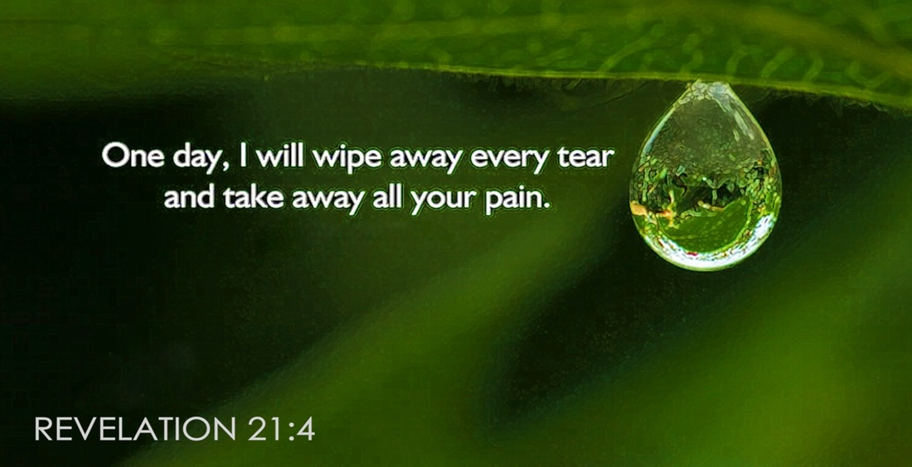

Tragedies strike saint and sinner alike. Is God fair? Does it matter to him?
If we believe in God, we have to wonder why he doesn’t eliminate mindless suffering from our planet. Yes, why doesn’t he make this bad world right? Why doesn’t he stop the hurting?
If God really cares, author Philip Yancey asked in Disappointment With God, “Why won’t he reach down and fix the things that go wrong — at least some of them?”
Rabbi Harold Kushner asked the same question in his best-seller, When Bad Things Happen to Good People. He told of a personal tragedy that caused him to rethink everything he had believed and been taught about God. His son, Aaron, died at age 14 of progeria, the “rapid aging” disease. Aaron was short, bald and appeared to be an old man even as a young child.
Why did the Kushners have to suffer this tragedy? They were decent people and didn’t deserve this. Rabbi Kushner wrestled with this question. He asked in his book: “If God existed, if He was minimally fair, let alone loving and forgiving, how could He do this to me?”
Why do innocent people, average people, nice people suffer? Why should anyone suffer? It has been a question asked again and again down through the ages. It may be the important issue of our lives. “There is only one question which really matters,” wrote Rabbi Kushner, “why do bad things happen to good people?”
How, then, do we make sense of our world, our sufferings? Philip Yancey explored these issues in Disappointment With God. He had to admit: “I knew I would have to confront questions that have no easy answers — that may, in fact, have no answers.”
The questions about suffering affect all of us in some way. Even if we or our family escape tragic accident or illness, we will have other burdens to bear. Perhaps it’s loneliness, rejection, grinding poverty, a broken relationship, a troubled childhood, fear or guilt. And none of us escapes the ultimate tragedy: death. Why is the world — your life — buffeted by suffering?
One article like this cannot answer everything about human suffering. It can, however, give something helpful in the way of directing our thoughts. One of these keys is to distinguish between what God is and what life brings.
God is fair, but life sometimes isn’t. God is good, but people often do bad things. God is perfect, but we make mistakes that sometimes cost us dearly. As long as people do bad or evil things, other people will be hurt. If a robber shot you, you and your family would suffer.
As long as humans make mistakes, there will be suffering. If we could just take back that one decision or action that caused so much suffering. Oh, if we could eliminate one tiny mistake. But we can’t. As long as nature is what it is, it will manifest itself as both Dr. Jekyll and Mr. Hyde. We will be blessed both with rain for our crops and cursed with typhoons that flood, destroy and kill. As long as we are physical and subject to breaking down and wearing out, sickness and death will come upon us.
All scripture quotations, unless otherwise indicated,
are taken from the Holy Bible, New International Version®, NIV®. Copyright ©1973, 1978,
1984 by Biblica, Inc.™
Used by permission of Zondervan. All rights reserved worldwide. www.zondervan.com
Decent people will often suffer, and those who do terrible evils will often prosper. Jesus Christ pointed this out when he said that the rain falls on both the “righteous and the unrighteous” (Matthew 5:45).
Consider what the world would look like if it could be fair as we want it to be fair. No accidents could happen, no criminal act could occur, no natural disaster could affect us. That kind of world would have no logic. The natural laws that govern cause and effect would have to be different in every circumstance.
Would God stop carelessness and irresponsibility? Would he stop everyone from being hurt, from coming down with illnesses and diseases? What about death? Would God abolish death? He’d have to, if sorrow and suffering were to be eliminated.
During our entire lives we would be like babies, always under the interventionist eyes of our spiritual parent, God. No longer would we be free to choose, allowed to consider possible courses of action and to carry through on our choices.
We might agree that a world without suffering seems something of a fantasy. However, the question of God’s fairness doesn’t go away easily when we see so much suffering in the world.
Paul dealt with this issue in the book of Romans, chapter 9. He did so in the context of an important question: Why were only a few being called to salvation in the early New Testament church? Was God unjust in denying salvation for everyone at that time? Why did the vast majority remain “without hope and without God in the world” (Ephesians 2:12)?
Paul explained God’s view of things by citing the example of the Pharaoh of the Exodus. In rescuing Israel from slavery in Egypt, God devastated the Egyptian nation in the process. But wasn’t that unfair? Paul asked: “What then shall we say? Is God unjust? Not at all! For he says to Moses, ‘I will have mercy on whom I have mercy’” (Romans 9:14-15).
The Israelites would certainly have said God was being fair! At last they were being freed from slavery. Life was certainly coming up roses for them. But if we had been Pharaoh or the Egyptians, our attitude would have been quite different. For starters, our secure world had just gone crazy on us. Our crops were destroyed. Our boys were massacred and drowned in battle. Our herds were slaughtered. Our country was wrecked. Our firstborn sons had been killed.
Had we been Egyptians at the time, only one conclusion would have been possible: God (or any number of the gods) was grossly unfair to us. Here was God mercifully intervening in human affairs to make life better for an entire nation — the Israelites. But there was still something unfair in the grand scheme of things. Another nation — Egypt — had been humiliated and destroyed.
Paul had only one answer to such apparent contradictions of life. We must trust God to work out his purpose, as he sees fit. And, to be sure, God does have a plan of salvation for all humanity.
Paul had responded to the question of God’s fairness. But he didn’t answer the question directly. His response to his readers was to inquire — Why are you even asking? Paul’s response was a stinging rebuke: “Who are, you, O man, to talk back to God? Shall what is formed say to him who formed it, ‘Why did you make me like this?’” (Romans 9:20).
But don’t we have the right to ask God: “Why did you make me so I would get cancer or suffer a stroke? Why wasn’t I a clay pot with a different design?” Paul refused to directly answer “Why?” He defended God’s wisdom and justice. Paul wrote: “Oh, the depth of the riches of the wisdom and knowledge of God! How unsearchable his judgments, and his paths beyond tracing out!” (Romans 11:33).
Paul insisted that no matter what our suffering, we must accept that God is wise, merciful and just. Paul was saying that God allows human suffering because he is God. God is so great, his thoughts so far above ours, that inferior human logic does not apply to his actions.
There isn’t always a clear why to suffering. It’s really the wrong question to ask. A specific why looks back to something that we can’t change. We must look forward by asking: What purpose is there to life, unfair as it may sometimes seem? What future does God have beyond this life of suffering?
We should understand God correctly. He is not an advocate of suffering for its own sake.
One example. More than 2,500 years ago, the prophet Jeremiah surveyed the carnage of the city of Jerusalem, sacked by the Babylonians. Inside the besieged city, starving mothers had eaten their dead children. Jeremiah looked past the suffering of a sinful and dying generation to a future with hope. “Men are not cast off by the Lord forever,” he said (Lamentations 3:31). “Though he brings grief, he will show compassion, so great is his unfailing love. For he does not willingly bring affliction or grief to the children of men” (verses 32-33).
But it was in Jesus Christ that God showed his attitude toward human suffering. He once and for all demonstrated he does care by sending his own Son to this earth. Jesus lived, agonized and died by the rules of life, the same ones we live and suffer by. It was actually God in the flesh who came to suffer with us. It was the greatest example of God’s love possible. Jesus Christ himself said it: “Greater love has no one than this, that he lay down his life for his friends” (John 15:13).
Less than 24 hours after saying this, Jesus, as God incarnate, gave his life for all the world. He had suffered and died for human beings, to take away their sins and open up salvation for those who would believe. John witnessed this death of God in the flesh. The sacrifice of Jesus Christ exemplified love. John expressed it eloquently: “For God so loved the world that he gave his one and only Son, that whoever believes in him shall not perish but have eternal life” (John 3:16).

In the crucifixion, God put to rest for all time any idea that he doesn’t care about us during our suffering. In the future resurrection of the righteous, God will give them immortal bodies and make their lives suffering-free. The tortured, the cancer victims, the unloved, the paraplegics, the lost and lonely — everyone who has suffered and is suffering — will suffer no more.
God will swallow up suffering and death in the victory of eternal life. He will be the God who cares, who is seen, who is fair. Then, God will be known to all humanity. He will act as healer and life-giver, one who does not take pleasure in human suffering.
In that new world, described in the final chapters of the Bible’s last book, Revelation, God will dwell with his people. Revelation chapter 21 tells us: “He will wipe every tear from their eyes. There will be no more death or mourning or crying or pain, for the old order of things has passed away” (verse 4).
The book Disappointment With God, in the words of its author, Philip Yancey, deals with the gap between what many people “expect from their Christian faith and what they actually experience.”
Christianity, says Yancey, is all too often put forth as the good news of individual triumph and success in this world. Many Christians come to expect regular and dramatic physical evidence of God working in their lives. Then, personal problems and tragedy strike people. But God doesn’t seem to answer their prayers or end their pain. That’s when many feel disappointment with God. They feel betrayal — and even guilt.
Yancey writes about our deepest desire to understand God when he seems silent. He asks why God fails to prevent our suffering, end it or reach down into our lives and make things right. He also examines three basic questions we would like to ask God about our suffering, but few dare ask aloud: Is God unfair? Is God silent? Is God hidden? These questions have less to do with faith than with our feeling that God has left us, that somehow he doesn’t care.
But there is an irony in the idea that God seems to hide himself from human suffering. Throughout history, in his dealings with human beings, God has been the betrayed one. God has been repeatedly put off by humans, as a jilted lover or rejected parent. He has been forced to distance himself because people have kept the potential relationship between Creator and human beings from being formed.
Yancey thus concludes: “All feelings of disappointment with God trace back to a breakdown in that relationship.” To make this point clear, he devotes a number of pages to the life of Jesus. God had come in human flesh to live among human beings — and he dramatically affected their lives — yet was rejected by them.
In spite of it all, God in Jesus grasped what it is like to suffer as a human. Yancey writes: “The New Testament records what happened when God learned what it feels like to be a human being.” He asks: “Would it be too much to say that, because of Jesus, God understands our feelings of disappointment with him?”
In the second part of his book, Yancey takes up the meaning of the book of Job, which any exploration of suffering and God’s presence must. He concludes that Job is more than “the Bible’s most complete treatment of the problem of suffering.” He discovered that “seen as a whole, Job is primarily about faith in its starkest form.”
When trials come, says Yancey, we should not ask “Why?” about suffering, but “To what end?” His conclusion about the Christian and suffering is that “God deserves trust, even when it looks like the world is caving in.”